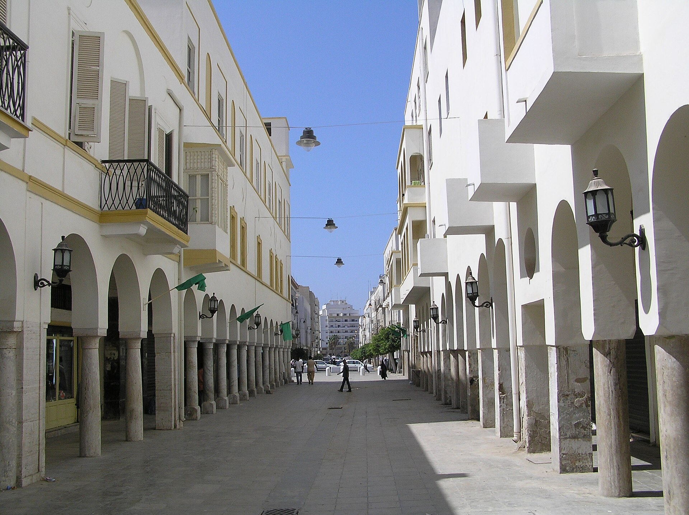

A ceasefire on paper: attacks continue in Gaza as Turkey urges the Islamic world to act
At the COMCEC meeting in Istanbul, Vice President Cevdet Yilmaz said massacres and aid obstruction persist despite the truce. Gaza authorities report 5,989 ceasefire violations.

At the 42nd Ministerial Meeting of COMCEC (the Standing Committee for Economic and Commercial Cooperation of the Organisation of Islamic Cooperation) in Istanbul on November 3, 2026, Turkish Vice President Cevdet Yilmaz called on the Islamic world to take the firmest possible stance on Palestine. Despite a declared ceasefire, he said, attacks and the obstruction of humanitarian aid continue in Gaza.
A ceasefire in name only
The Gaza ceasefire took effect on October 10, 2025. According to the Gaza Government Media Office, it has since been violated 5,989 times, including 753 times in October alone. The Gaza Health Ministry says these violations have killed about 1,599 Palestinians and wounded 5,774 more.
Aid is not getting through
Under the deal, 600 trucks of food, medicine, fuel and shelter materials were to enter Gaza each day. Gaza officials say only 3,777 trucks entered in October — just 20.3% of the stipulated 18,600, an average of about 122 a day. Since the truce began, only 77,657 of the agreed 232,800 trucks (33.3%) have been delivered.

Recent incidents
On November 1, Israeli strikes killed eight people, including a child. On November 3, at least three Palestinians were killed at a park in Gaza City and in the Al-Mawasi area near Khan Yunis. Since the war began in October 2023, more than 74,000 people have been killed in Gaza, over 174,000 wounded, and nearly 90% of civilian infrastructure destroyed.
The Islamic world's response
Yilmaz listed COMCEC projects: 10 new projects launched this year under the Al-Quds (Jerusalem) Program, with 28 completed in total; five projects under the Syria Program this year; and 31 projects supported this year through the project-financing mechanism (209 since 2013). At the meeting, 24 countries and 12 international organisations held 62 bilateral meetings; next year's priority is using Islamic finance instruments for food security.
Yilmaz's statement
"Despite the declaration of a ceasefire, the Netanyahu administration's continuation of massacres on flimsy pretexts at every opportunity and the obstruction of humanitarian aid increase the suffering of our Palestinian brothers," Yilmaz said, adding that "the Islamic world must stand most strongly against this oppression." The casualty and aid figures cited here were released by Gaza authorities; Israel generally disputes such data or describes the strikes as security measures.